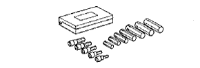
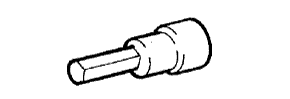
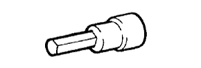

FRONT AIR CONDITIONING UNIT > REASSEMBLY > Preparation

| Torque wrench | - |
| Tape | - |
| Snap ring expander | - |
| Item | Capacity | Classification |
| Compressor oil | - | ND-OIL 8 or equivalent |
|  | 09040-00011 | Hexagon Wrench Set | - |
|  | (09043-20060) | Socket Hexagon Wrench 6 | - |
|  | (09043-20120) | Socket Hexagon Wrench 12 | - |
 | 09082-00040 | TOYOTA Electrical Tester | - |
 | (09013-1C130) | "TORX" Socket Wrench T-type T40 | - |
 | (09083-00150) | Test Lead Set | - |
 | 95146-00180 | Halogen Leak Detector DENSO Part No. | - |